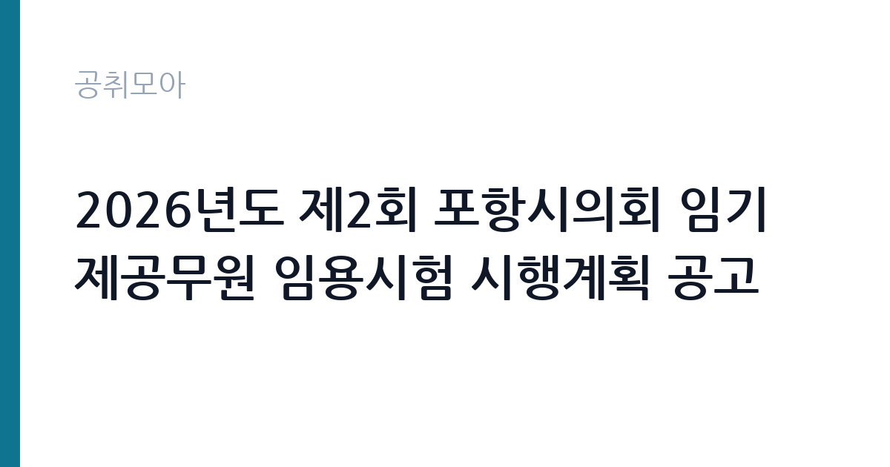

[지자체] 2026년도 제2회 포항시의회 임기제공무원 임용시험 시행계획 공고
경상북도 포항시 의회사무국 · 경북 · 마감 2026-10-08 (D-16) · 출처 나라일터

한눈에 보는 모집 조건
| 기관 | 경상북도 포항시 의회사무국 |
|---|---|
| 공고명 | 2026년도 제2회 포항시의회 임기제공무원 임용시험 시행계획 공고 |
| 고용형태 | 임기제 |
| 근무지 | 경북 |
| 게시일 | 2026-09-22 |
| 마감일 | 2026-10-08 (D-16) |
지원자격, 이렇게 읽으세요
- 행정7급 2명
- 접수 ~2026-10-08 마감
- 세부 조건은 원문 공고문 확인
임용 직급은 일반임기제 행정7급 상당의 정책지원관으로, 관련 분야의 경력과 학위를 요구합니다. 세부 자격요건은 붙임 공고문에서 확인하셔야 하며, 정책 분석과 의정 지원 경험이 핵심이 될 가능성이 큽니다. 지방공무원 임용이므로 결격사유 등의 조건도 함께 살펴보시기 바랍니다. 접수 기간이 3일에 불과하므로 증빙서류를 미리 준비하시기 바랍니다.
이 공고의 포인트
첫 번째 포인트는 2명 선발의 정책지원관 자리라는 점입니다. 지방의회 정책지원관은 조례 제정과 예산 심의를 돕는 전문 직무로, 지방자치 실무를 깊이 있게 경험할 수 있습니다. 두 번째로 임용 기간 1년으로 근무 계획이 명확합니다. 세 번째로 방문 접수 시 본인과 가족 접수가 가능해, 등기우편보다 확실하게 접수할 수 있습니다. 포항 지역 정치·행정에 관심 있는 분께 적합합니다.
전형은 어떻게 진행되나
전형은 서류전형과 면접시험으로 진행되는 임기제 임용시험입니다. 응시원서 접수는 10월 6일부터 10월 8일까지 3일간이며, 방문 접수(본인과 가족) 또는 등기우편 접수가 가능합니다. 등기우편은 마감일 도착 기준일 수 있으니 원문에서 반드시 확인하시기 바랍니다. 면접에서는 정책 분석 능력과 의정 지원 경험을 직접 평가합니다.
원문에서 확인한 전형 방식
2026년도 제2회 포항시의회 임기제공무원 임용시험 시행계획을 다음과 같이 공고하오니 유능한 분들의 많은 응시를 바랍니다. 1. 임용직급 및 분야 : 일반임기제 행정7급(정책지원관) 2. 임용인원 : 2명 3. 임용기간 : 1년 4. 응시원서 접수 : 2026. 10. 6.(화) ~ 2026. 10. 8.(목) [3일간] 5. 접수방법 : 방문 접수(본인 및 가족) 또는 등기우편 접수 6. 담당부서(연락처) : 포항시의회사무국 의정팀(☎054-270-5109) 기타 자세한 사항은 붙임 공고문을 참고하시기 바랍니다
이런 분께 추천해요
- 정책 분석과 의정 지원 업무에 관심 있으신 분
- 포항 지역에서 1년간 임기제 근무가 가능하신 분
- 지방자치와 지방의회 실무를 경험하고 싶으신 분
지원 전 체크리스트
- 정책지원관 분야의 자격·경력 요건을 붙임 공고문에서 확인했습니다
- 응시원서 접수 기간 3일(10월 6일~8일)에 맞춰 서류를 준비했습니다
- 등기우편 마감 기준을 원문에서 확인했습니다
- 담당 부서 연락처 054-270-5109를 확인했습니다
모집 일정과 제출 타이밍
응시원서 접수는 2026년 10월 6일부터 10월 8일까지 3일간입니다. 추석 연휴 이후이므로 연휴 기간에 서류를 완성해 두시기 바랍니다. 서류전형 합격자 발표와 면접 일정은 시의회 안내에 따르시기 바랍니다. 임용 기간 1년을 고려해 향후 계획을 함께 세워두시기 바랍니다.
직무 이해하기: 지자체
정책지원관은 시의원의 의정활동을 지원하는 직무로, 조례안 검토와 예산·결산 분석, 행정사무감사 지원, 정책자료 조사와 보고서 작성을 맡습니다. 포항시의회사무국 의정팀 소속으로 경북 포항에서 근무합니다. 지자체 카테고리 공고입니다.
자기소개서 작성 팁
응시서류에서는 정책 분석과 보고서 작성 경험을 구체적으로 기술하시기 바랍니다. 다뤘던 정책 분야와 본인의 역할, 성과를 사례와 함께 제시하면 좋습니다. 지방의회 의정 지원에 대한 이해와 관심을 진정성 있게 서술하시기 바랍니다.
면접 준비 포인트
면접에서는 조례와 예산 심의 지원 경험을 질문받을 가능성이 큽니다. 지방자치법과 의회 운영의 기본 구조를 미리 정리해 두시기 바랍니다. 정치적 중립성과 공정한 지원 태도에 대한 질문에는 명확한 소신을 밝히시기 바랍니다.
급여·근무조건 읽는 법
보수 수준은 원문 공고문에서 확인하셔야 합니다. 일반임기제 7급 상당의 봉급은 지방공무원보수규정에 따른 연봉제가 적용되며, 경력을 고려해 책정됩니다. 정확한 금액과 수당 구성은 원문의 보수 조건에서 확인하시기 바랍니다.
자주 묻는 질문
- 정책지원관은 어떤 일을 합니까
시의원의 조례 제정과 예산 심의, 행정사무감사를 지원하는 전문 직무입니다. 정책자료 조사와 보고서 작성이 핵심 업무입니다. - 임용 기간은 얼마나 됩니까
임용 기간은 1년입니다. 연장 가능 여부는 원문과 시의회 규정에 따르시기 바랍니다. - 접수는 어떻게 합니까
10월 6일부터 10월 8일까지 방문 접수(본인과 가족) 또는 등기우편으로 접수합니다. 세부 방법은 붙임 공고문에서 확인하시기 바랍니다.
함께 보면 좋은 공고
[지자체] 2026년도 제2회 나주시의회 임기제공무원(한시임기제) 임용시험 시행 공고 — 마감 2026-10-08[지자체] 2026년 대전광역시 서구보건소 일반의사(기간제근로자) 채용 공고 — 마감 2026-10-01[지자체] 서울특별시 강북구 시간선택제임기제공무원(정책기획) 경력경쟁임용시험 공고 — 마감 2026-10-08출처: 나라일터 공개정보를 바탕으로 공취모아가 정리한 안내글입니다. 모집 조건·일정은 변경될 수 있으니 지원 전 반드시 원문 공고문을 확인하세요. 본 글은 정보 제공용이며 합격을 보장하지 않습니다.